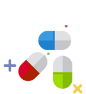

주메뉴
보건소 소개
보건소 소개
인사말
조직 및 업무안내
위생행정서비스현장
찾아오시는 길
사당분소
보건사업
보건사업
모자보건
방문보건
생명존중
감염병관리
의료비지원
건강증진
진로/상담
진로/상담
진료안내
예방접종
건강검진
보건상담
식품·공중 위생
식품·공중 위생

식품위생
공중위생
건강기능식품
식품안전
모범음식점
축산물·동물 위생
보건민원
보건민원
신고마당
입찰계약정보
민원사무서식
인터넷자율점검
건강정보
건강정보
알림마당
의약품정보
의료기관
소독업소
영양플러스
비만도진단